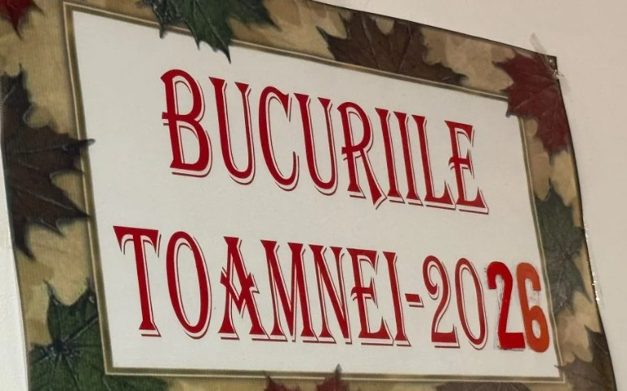
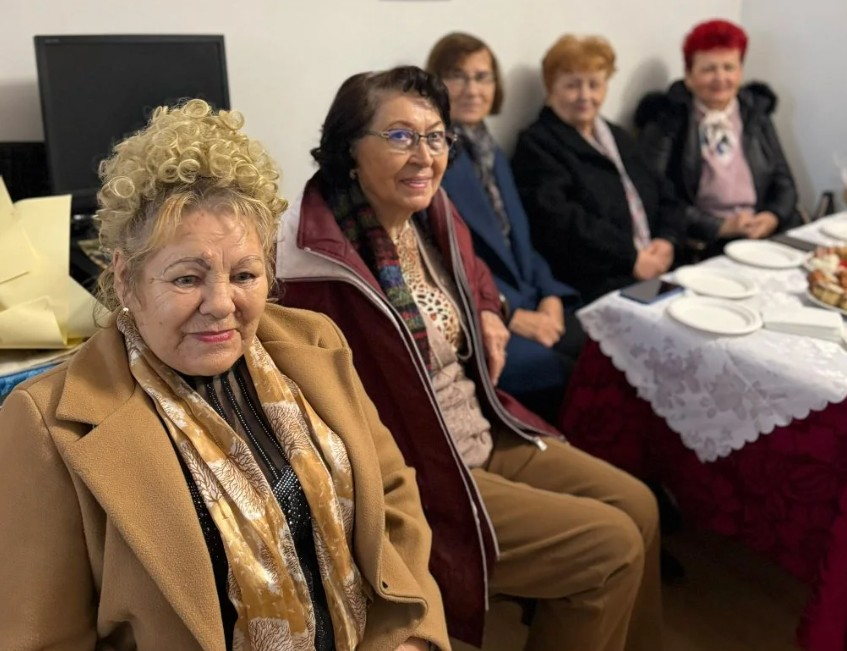
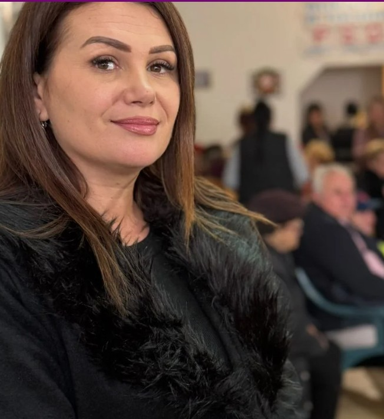
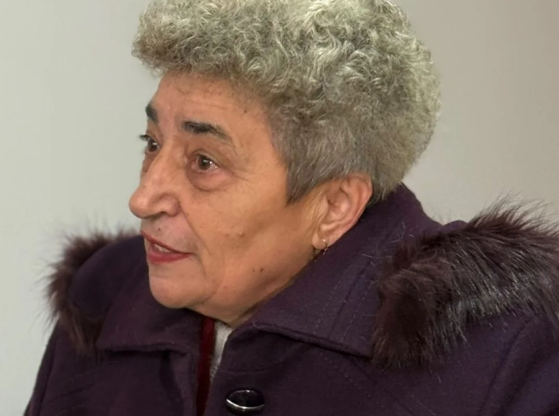

La Clubul Pensionarilor PSD din Drobeta-Turnu Severin, toamna nu trece neobservată. Doamnele din organizație s-au reunit pentru o nouă ediție a întâlnirii „Bucuriile Toamnei 2026”, un eveniment care a devenit deja tradiție și în care roadele sezonului sunt sărbătorite așa cum se cuvine: cu mese încărcate, cu voie bună și cu bucuria de a fi împreună.
Sala clubului s-a umplut de arome cunoscute din copilărie. Pe mese s-au aliniat borcane cu zacuscă, gemuri și dulcețuri, alături de coșuri cu struguri, pere și mere, aperitive și platouri cu prăjituri de casă.

Bunătăți din cămară, pregătite cu mâinile lor
Bunicuțele nu au venit cu mâna goală. Fiecare a adus ce a pregătit în propria gospodărie, iar fiecare borcan sau platou a spus, în felul lui, o poveste despre pricepere, răbdare și generozitate. Sunt rețete păstrate de-a lungul anilor și obiceiul, tot mai rar în zilele noastre, de a pune pe masă doar ce ai făcut cu mâinile tale.
Pentru participante, întâlnirea a însemnat mult mai mult decât o expoziție de preparate. A fost ocazia de a se revedea, de a schimba rețete, de a păstra obiceiuri vechi și de a se bucura împreună de lucrurile simple.
„Am pregătit bucate de toamnă, gemuri, zacuscă, dulcețuri, prăjituri, toate cu mult drag. Ne bucurăm de acest eveniment, care a devenit deja o tradiție în rândul nostru și în sufletele noastre.” – Ana Bolboșescu

Tania Lăin: „Ar trebui să învățăm de la dumnealor”
Întâlnirea a fost și un prilej de a celebra spiritul de echipă și solidaritatea care țin comunitatea unită. Prezentă la eveniment, Tania Lăin, președinta Organizației Femeilor Social-Democrate Mehedinți, a apreciat implicarea doamnelor și exemplul pe care acestea îl oferă celor mai tineri.
„Este o tradiție deja să sărbătorească toamna aici, la sediul dumnealor. Ar trebui să învățăm de la dumnealor, pentru că, dincolo de aceste întâlniri și de lucrurile pe care le fac, ne arată că sunt unite, sunt solidare și, cel mai important, știu să dăruiască.”

Ecaterina Motorga: „Ne reunim și ne bucurăm unii de alții”
Ecaterina Motorga, președinta Organizației Pensionarilor PSD Drobeta-Turnu Severin, a explicat de ce această întâlnire contează atât de mult pentru membrele organizației și de ce este așteptată în fiecare an.
„Am avut parte mereu de această tradiție. Bunicuțele noastre au pregătit bucate alese, sărbătorim toamna și roadele ei. Este un moment în care ne reunim și ne bucurăm unii de alții.”

🍂 Pe scurt – „Bucuriile Toamnei 2026”
Ce: întâlnire de toamnă cu preparate de casă
Unde: Clubul Pensionarilor PSD, Drobeta-Turnu Severin
Pe masă: zacuscă, gemuri, dulcețuri, aperitive, prăjituri și fructe de sezon
Au luat cuvântul: Tania Lăin (OFSD Mehedinți), Ecaterina Motorga (Organizația Pensionarilor PSD Drobeta-Turnu Severin), Ana Bolboșescu
Mesajul: prietenie, solidaritate și bucuria de a dărui
O tradiție care adună oamenii la aceeași masă
Într-o perioadă în care mulți vârstnici petrec tot mai mult timp singuri, astfel de întâlniri au o valoare care depășește farfuriile de pe masă. Ele țin oamenii aproape, le dau un motiv să se pregătească, să iasă din casă și să se simtă parte dintr-o comunitate.
„Bucuriile Toamnei” rămâne, astfel, una dintre întâlnirile prin care membrele organizației celebrează anotimpul recoltei, dar mai ales prietenia, generozitatea și bucuria de a fi împreună.
Pentru alte știri din comunitățile din județ, urmăriți secțiunea Social de pe MehedintiAzi.ro și pagina de Facebook Mehedinți Azi.
Redactia MehedintiAzi.ro